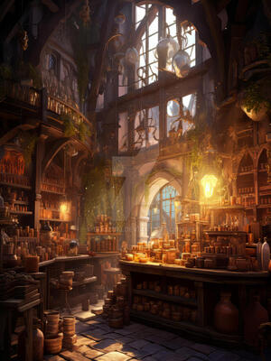

Shadows
A clandestine nexus in the heart of the underworld, where Shadowforge Services operates discreetly. Here, heroes seek out expert
weapon enhancements, potent elixirs, and crucial intelligence to navigate the treacherous depths of their dark realm.
Shadow's Edge Armory

Mystic Cauldron Alchemy Shop